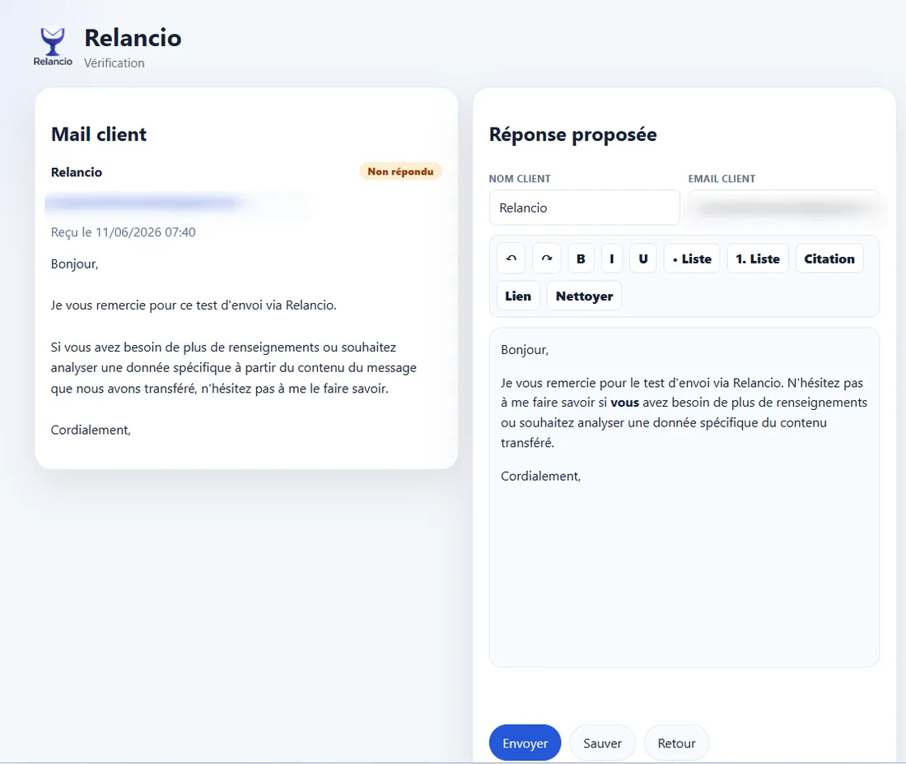

Relancio
Web/mobile access
A complementary and optional feature for remote review and validation.
Optional complementary feature
Relancio is primarily used from the desktop application. Web/mobile access is a useful complement for reviewing and validating some replies remotely. It requires a provisioning key or code provided by the author, which may or may not be granted.
What the web/mobile portal allows
Once access is available and configured, the portal lets you view proposed replies, search by client, email or subject, sort the list, filter by status, open an email, correct the client name or email address, edit the reply, save it or send it manually.



Configuration from the application
Settings are configured in the desktop application, especially the Provisioning and Mobile tabs. The web/mobile password is stored locally as a hash. The private address is only useful if remote access has been provisioned.
The Mobile tab also lets you start the local server, test local access, start the tunnel and copy the private mobile address. The display period limits visible items to recent emails.

No hidden automation
Even from web/mobile, the user must open the reply, review it and explicitly click Send. The portal does not add an automatic sending mode.